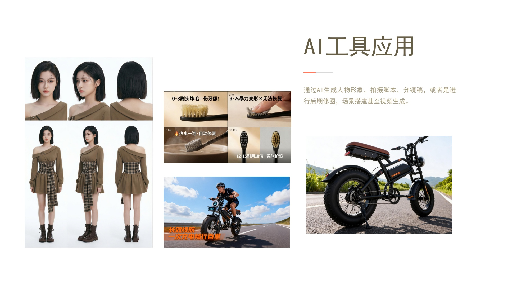

AI创作
AI工具应用
通过AI生成人物形象、拍摄脚本、分镜稿，进行后期修图、场景搭建甚至视频生成
项目类型
AI辅助创作
应用场景
形象生成 · 场景搭建 · 视频生成
使用工具
Midjourney · SD · PS AI

AI技术应用
- ▹ AI生成人物形象与肖像
- ▹ 拍摄脚本与分镜稿生成
- ▹ 后期修图智能优化
- ▹ 虚拟场景搭建与渲染
- ▹ AI辅助视频生成
项目说明
熟悉主流AI图像生成平台的逻辑和工作流程，能够利用AI工具辅助创作过程。 从前期的人物形象生成、脚本策划，到后期的图像修整、场景搭建， 乃至视频生成，形成完整的AI辅助创作工作流，提高创作效率和质量。